Oracle HTP Plugin for Atlassian Confluence
This plugin is not supported. Please note that this documentation is obsolete at parts. Please refer to source code if in doubt
Use this plugin as a web gateway for your Oracle database. You can use it to execute stored procedures, run queries and build reports.
Oracle HTP Macro takes its name from Oracle HTP package, which is commonly used to generate HTML pages and other web content in Oracle database. This content is then delivered to a client via Oracle HTTP Server that is connected to Oracle database by means of data access descriptor (DAD). Oracle HTP Macro for Confluence allows publishing HTML, generated by Oracle, in your Confluence page. No Oracle HTTP Server is required. Drop Oracle HTP Macro on page, select a DAD, specify render method, call parameters (if any), and a PLSQL block to be invoked. Save the page and you will get whatever HTML (JSON, binary data, etc) is generated by your Oracle database.
Setup
Before using Oracle HTP Macro to call Oracle stored procedures you will have to setup your database connection cache and data access descriptors.
Connection cache
Before using the plugin with your Confluence you have to provide an Oracle JDBC driver and create one or more Data Access Descriptors. You can download the driver from Oracle: Oracle JDBC Download Page. This plugin was mainly tested with ojdbc6.jar, but also proved to work with earlier version ojdbc14.jar. You will have to put the driver to your Confluence machine and make sure it is accessible by Confluence. If you fail to setup ojdbc path correctly, than you will receive an error: Connection failed: Failed to load Oracle JDBC driver.
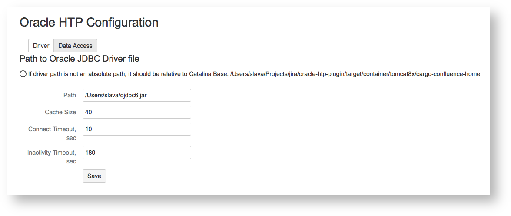The plugin uses database connection caching to share connections between database calls.
Cache Size specifies the maximum number of physical database connections supported by plugin
Connect Timeout specifies the amount of time (in seconds) that the plugin will wait to establish a database connection before timeout
Inactivity Timeout specifies the amount of time (in seconds) that an idle connection remains in cache before it is forcibly closed by plugin
Data Access Descriptor
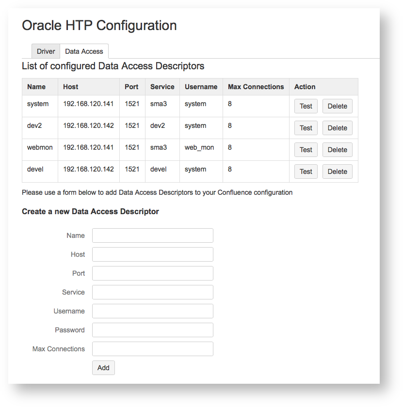To get a database connection you have to create a Data Access Descriptor (DAD). Host, Port, Service, Username and Password fields have the same meaning as they would have with standard JDBC connection.
Name is used to reference your DAD in Oracle HTP Macro settings (see below)
Max Connections specifies maximum number of physical connections using this DAD
You can test your DAD by clicking the Test button. If everything is set correctly you will get success message: Connection successful; if invalid host or port was specified, you will get an error: Connection failed: The Network Adapter could not establish the connection; if invalid username or password was specified, you will get: Connection failed: ORA-01017: invalid username/password; logon denied.
Oracle HTP Macro
The macro supports four different render methods described below:
inline
lazy
rest
c3js
Inline Method
This is by far the most simple method. Take a look at an example:
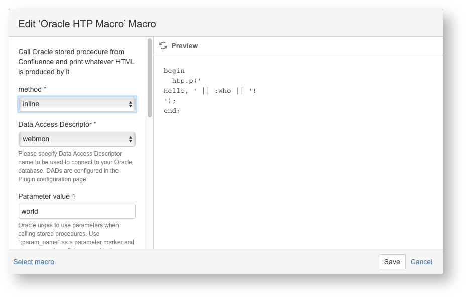Save the page and you will get a paragraph: Hello, world! -- created for you by your Oracle database!
You specify PLSQL block to invoke in the body of your macro. With inline method the block is invoked in the process of rendering a Confluence page and the page will not get returned to your browser until the database call is complete. This method is acceptable for only brief calls that do not take much time to complete; for time-consuming calls lazy method is a better choice.
Lazy Method
With this method a Confluence page is returned before a database call is complete. If a call takes a long time, then a spinner will be displayed. Finally when an Oracle-generated HTML is fetched by the database, it will be rendered on your page.
Take a previous example, change method to lazy and save the page. You will get an error: Not authorized to run plsql block. To get over this error you should specify read or write restrictions to your Confluence page and refresh. Lazy, rest and c3js methods require access restrictions to be applied to a page, contrary to inline calls that do not care about access restrictions.
REST Method
Rather than invoking a stored procedure, this method publishes it as a RESTful service, and thus makes it available to other Confluence components. Take an example above and change method to rest and stored procedure to something returning a valid JSON:
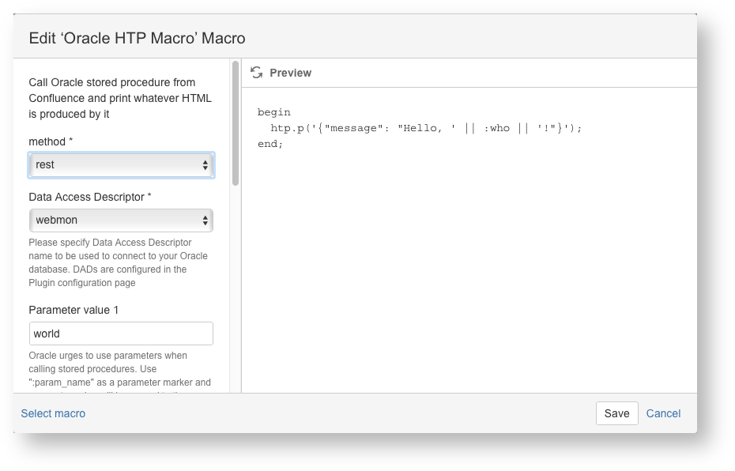Save the page and you will get something like this:
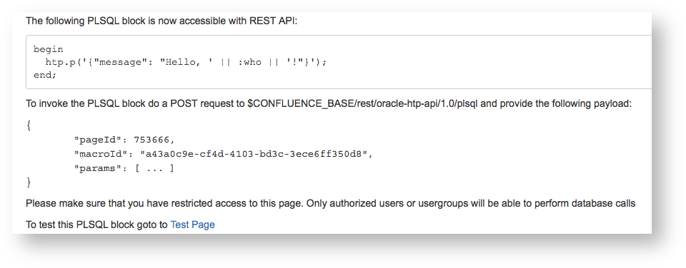You can access your data with the endpoint specified. To test you can click the Test Page link. In the test form, put your name in Parameter value 1 field and submit. You should find your name in a message returned by the database:
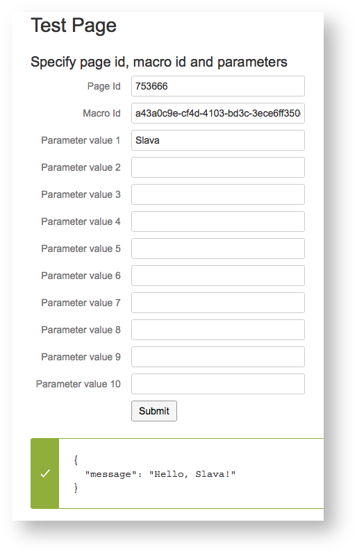C3JS Method
This method is used to generate charts. It uses C3JS library (http://c3js.org) to create SVG charts from JSON data returned by Oracle stored procedure. Please refer to to C3JS examples and API reference for details.
In many cases PLSQL code auto-generation will help you to create charts from your SQL statements, as described below. You can also take a look at a screencast at https://youtu.be/k-TGu9P2fUo for a number of chart examples.
Date Values from PLSQL
C3JS accepts data in JSON format, which means text and numbers for scalar values. To pass a date you need to use "DD-MM-YYYY HH24:MI:SS" as a date format, for example
select to_char(sysdate,'DD-MM-YYYY HH24:MI:SS') from dual; |
The plugin will automatically convert the value to a Date object.
Value Formatting on Charts
C3JS library provides for value formatting for axis ticks. For example:
"axis": { "x": { "label": { "text": "Time", "position": "outer-bottom" }, "type": "timeseries", "localtime": true, "tick": { "format": "%d-%m %H:%M" } }, |
"y": { "label": { "text": "Amount REDO, Megabytes" }, "tick": { "format": "^,.0" }} |
If format attribute value is prepended by "^" sign it will be automatically converted to a D3 format object. See the quote from the macro source code:
if (data.axis && data.axis.x && data.axis.x.tick && data.axis.x.tick.format) { if (data.axis.x.tick.format.startsWith('^')) { data.axis.x.tick.format = d3.format(data.axis.x.tick.format.substring(1)); }}if (data.axis && data.axis.y && data.axis.y.tick && data.axis.y.tick.format) { if (data.axis.y.tick.format.startsWith('^')) { data.axis.y.tick.format = d3.format(data.axis.y.tick.format.substring(1)); }} |
Please refer to C3JS samples and reference pages for when to use D3.format object and when to use plain text format.
Usage Tips
Code Auto-Generation
You can use PLSQL block auto-generation for your SQL SELECT... statements. To use this feature you need to put your select statement into a macro body and press "Edit" button to open the Macro Editor dialog.
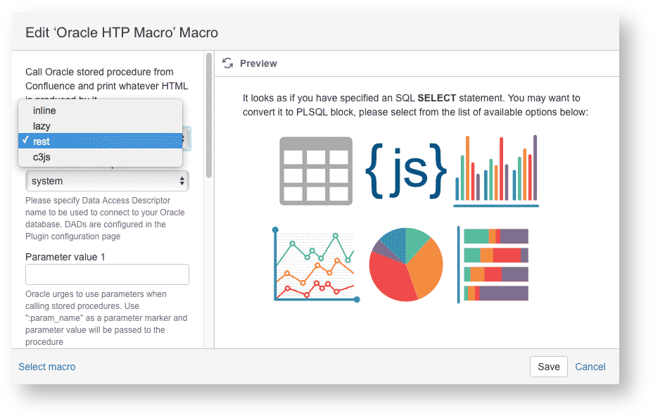You can generate the PLSQL blocks of the following types:
Confluence table
JSON
Bar chart
Line chart
Pie chart
Horizontal stacked chart
Adjust the auto-generated code to best fit your requirements.
Parameter Passing
This section does not apply to inline or rest macros.
It is possible to pass up to ten parameters to your PLSQL block. To reference a parameter in PLSQL you will use a parameter placeholder, for example:
declare v_tablespace varchar2(30) := :tablespace;begin ... |
Note the :tablespace – this is a parameter placeholder. The parameters are positional, so they get assigned in the order they appear in your PLSQL:
declare v_owner varchar2(30) := :owner;begin select count(bytes) from dba_segments where object_name := :name and owner = v_owner; ... |
In the example above :owner will take value from parameter 1, :name will take value from parameter 2.
You can pass URL parameters to your PLSQL block. To do so use a {url-param-name} as a parameter value, for example, suppose your Confluence page with id 1212602 contains a PLSQL block:
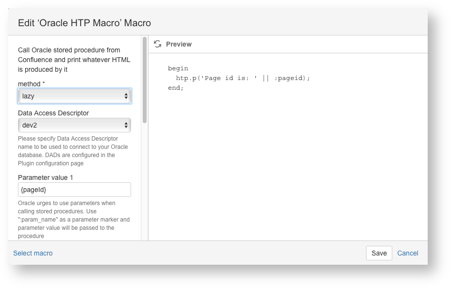When you navigate to /confluence/pages/viewpage.action?pageId=1212602 you will have "Page id is: 1212602" printed on your page.
You can use this feature to pass parameters from one PLSQL block to another. Suppose your C3JS pie chart has an "onclick" attribute defined (note that if the attribute value does not start with http:// or https:// it will be automatically prepended by your Confluence Base address):
"onclick": "/pages/viewpage.action?pageId=1212602", |
and a referenced page has a PLSQL block:
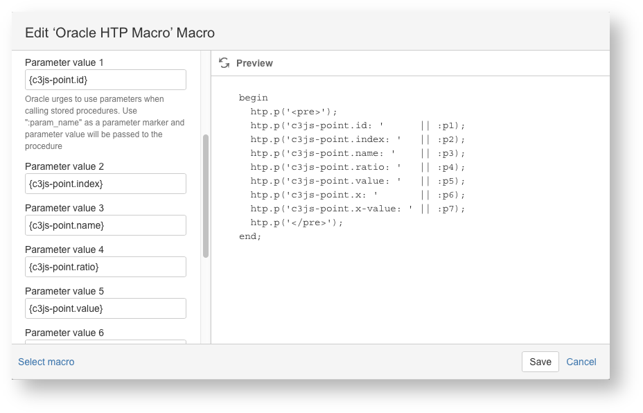When you click a point on your pie chart you will be navigated to the target page with the information describing the chart point that was clicked. Use it for a drill-down query in your PLSQL block.
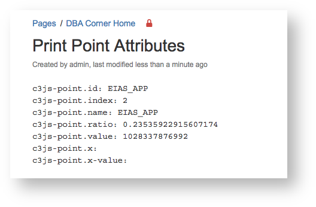DAD Selector Macro
This section does not apply to inline or rest macros.
DAD Selector is used to keep Oracle HTP macros on page in sync with each other, so that they use the same DAD even if their DAD macro parameters differ. When you select another DAD with a DAD Selector macro, all Oracle HTP macro tables and charts are refreshed. Please take a look as https://youtu.be/k-TGu9P2fUo for an example.
Consuming Rest Method
With rest method you can do lots of things. For example, you can use it with Confluence HTML macro and Google Charts (if not happy with C3JS):
Sample script to draw a histogram... Collapse source<div id="html-dom-files"></div><script type="text/javascript" src="https://www.gstatic.com/charts/loader.js"></script><script type="text/javascript"> google.charts.load('current', {'packages':['bar']});</script><script type="text/javascript">function plotChart1(e){ $("#html-dom-files").html( '<p align="center">Getting data, please wait...</p>' + '<div align="center"><img src="/images/icons/wait.gif"/></div>' ); $.ajax({ url: "/rest/oracle-htp-api/1.0/plsql", dataType: "json", data: { "pageId": 753666, "macroId": "a43a0c9e-cf4d-4103-bd3c-3ece6ff350d8", "params": [ domainCode ] } }) .done(function(jsonData){ $("#html-dom-files").html(""); var data = new google.visualization.DataTable(jsonData); var options = { height: 300, chart: { title: 'Data files statistics', subtitle: 'The number of reports, received during the last year', vAxis: { gridlines: { count: 4 } } }, bars: 'vertical' }; var chart = new google.charts.Bar(document.getElementById('html-dom-files')); // Do something else, perhaps fetch another chart google.visualization.events.addListener(chart, 'ready', onChartComplete); chart.draw(data, options); }) .fail(function(){ $("#html-dom-files").html("<p>Error!</p>"); });}</script> In a real Confluence wiki I will get a chart like this one:
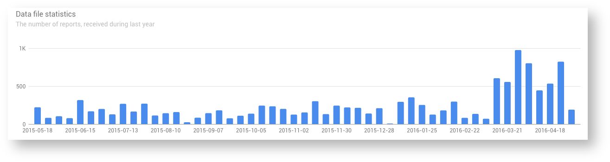Hope you find it useful.
This addon is free under MIT license. Source code for this addon is available at GitHub. To report a bug please use the Issue Tracker